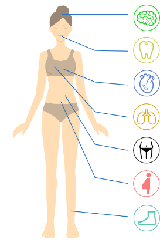
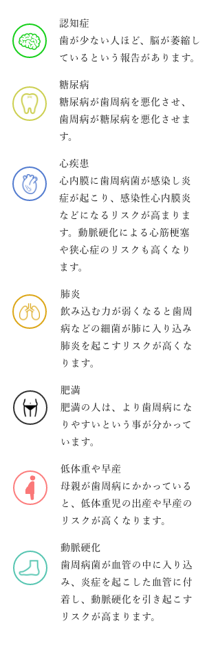
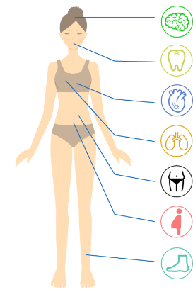
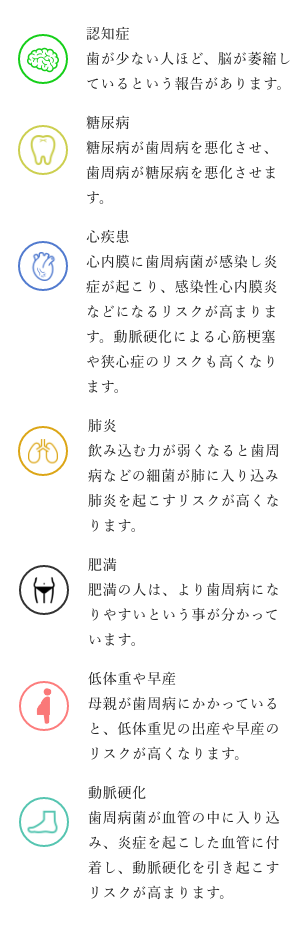

口腔内ケアで認知症予防から
ライフサイクルサポート
CONSEPT
サイエンスで、
ライフサイクルをサポートします。
コンセプトの説明
もしくは真善美についてここに入れる
テキストテキストテキストテキスト
テキストテキストテキストテキスト
BRANDS
真善美
しなやかに生きる人が大切にする価値観
「真善美（しんぜんび）」という言葉があります。
「真」とは、嘘偽りのないまことのこと。
「善」とは、道徳的に正しいこと。
「美」とは、美しいさまのこと。
これら三つは、人間が理想とするべき基本的な価値概念であり、
行動規範だとされています。
つまり、「真善美」を体現することが人間の理想的なあり方である、と言うわけです。

真善美を目指す意味
「真善美」というと、なんとなく日本の伝統的価値観であり、ちょっと古臭いイメージを持つ人もいるかもしれません。しかし、現代においては改めて見直されるべき概念なのかもしれません。
なぜなら、この「真善美」が人々の内的な拠り所に最適だからです。
いま時代は過渡期を迎えていて、この先どうなっていくのか想像することができません。
これまで当たり前だと思っていたことが、次々と変化していく時代を迎えています。
気をつけておかないと、時代に流され自分を見失ってしまう恐れがあります。
そんな中で、自分を見失わずに立ち続けるためには、アニカ拠り所となる内的な価値観を持つことが必要となります。
「真善美」というものは、まさにそれに「うってつけ」というわけです。
私たち日本人にとっては親和性が高いですし、いかなる時代においても不変の価値を持っています。
COLUMN
口臭とは／ラジカル化オゾン水とは
口臭・歯周病ドミノ
こちらの図は、口腔内環境が悪くなると連鎖的に生じる病気の流れです。
例えば、認知症に関しても、国内の有名な疫学研究で歯周病との関連が証明されました。
また、認知症になりやすい人たちの研究でも、糖尿病をはじめとする生活習慣病などがリスクファクター（原因因子）となっていることがわかりました。
歯周病は、すでに20代前半から始まる病気でもあり、継続的に口の中を清潔に維持することでしか予防できません。様々な、病気の予防を考えると口の中を清潔に保つことの重要性を理解できると思います。その、歯周病のサインは口臭です。
歯周病を引き起こす菌は、口の中の残りカスを栄養にして、ガスを発生させます。
それが口臭となっています。

歯周病と全身疾患の関係
 



認知症と口腔内環境
- アミノロイドβの蓄積
- 免疫細胞の攻撃の増加
- 神経細胞の死滅、
神経伝達の異常
- アルツハイマー病の憎悪
- 炎症の慢性化
- 細胞・組織の変性
歯周病の原因菌や毒素、炎症性物質などが血液中に入り込み、脳に侵入する。脳の中でアミロイドβとともに炎症を悪化させ、免疫細胞の攻撃を増加させる。その結果、神経細胞が死滅するなどアルツハイマー病が増悪する。
歯周病でアルツハイマー病が悪化するメカニズム（仮説）

歯周病菌
血流にのって脳内に侵入

認知症は、すでにみなさんがご存じの通り、患者さんにとってもご家族にとっても大変な病気です。認知症は、研究が進んだ今では長い時間かかって進行している病気であることがわかりました。早い人では、30歳代からその時計は動き出します。そして様々な生活習慣病もその速度を早めていきます。
そんななかで、一つのサインとして研究が進んでいる分野は、歯周病です。そのわかりやすいサインが口臭です。口臭は、すぐわかる健康の信号です。
口腔内の環境を整えることで、様々な病気の予防ができます。人生の時間を大切にするために、今日から始めてみませんか？
ラジカル化オゾン水
地球の創世記から、存在するオゾンは地球上で最も古くから存在するものの一つです。オゾンのちからで、人々の健康の増進に役立てる古くて新しい技術です。オゾンそのものは、気体ですが、最先端技術で水の中に閉じ込めました。ちょっと専門的ですが、電解質を加えることで、オゾンの周りにマイナスの電気で包んであげることで安定させています。
オゾンガスは、世界的に歴史的に消毒、殺菌で使われています。さらにドイツ、ヨーロッパなどは、医療にも使われています。
我々は、そのオゾンガスを安全に使えるように、ラジカル化オゾン水で人々の健康に役立てようとしています。
ラジカル化オゾン水は、医学系大学での研究で安全性を証明しました。
PRODUCTS
商品紹介
テキストテキストテキスト
〇〇〇〇円
テキストテキストテキストテキストテキストテキストテキストテキストテキストテキストテキストテキストテキスト
テキストテキストテキスト
〇〇〇〇円
テキストテキストテキストテキストテキストテキストテキストテキストテキストテキストテキストテキストテキスト
テキストテキストテキスト
〇〇〇〇円
テキストテキストテキストテキストテキストテキストテキストテキストテキストテキストテキストテキストテキスト
テキストテキストテキスト
〇〇〇〇円
テキストテキストテキストテキストテキストテキストテキストテキストテキストテキストテキストテキストテキスト
テキストテキストテキスト
〇〇〇〇円
テキストテキストテキストテキストテキストテキストテキストテキストテキストテキストテキストテキストテキスト